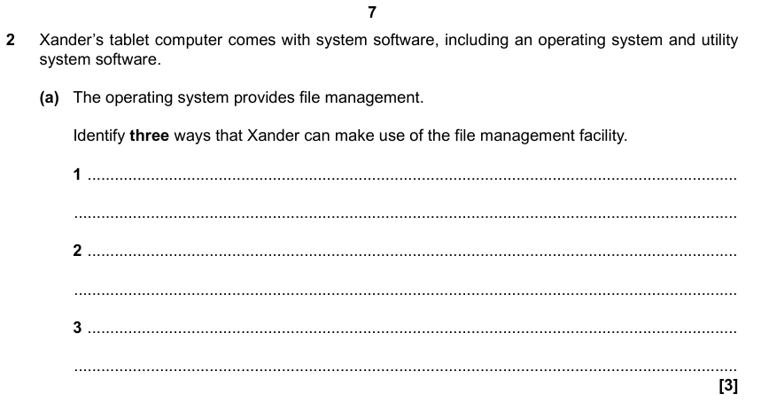

Operating Systems
By Jeetaditya Chatterjee
Press s for speaker notes
What is an Operating system
What an operating system provides
User interface
Text User Interface
Graphical User Interface
Memory management
Peripheral management
User management
File management
Questions
State 2 functions of an Operating System
Explain what is meant by a device driver
Explain how an operating system manages memory [2 marks]
Explain why is file managment used
Exam Question
